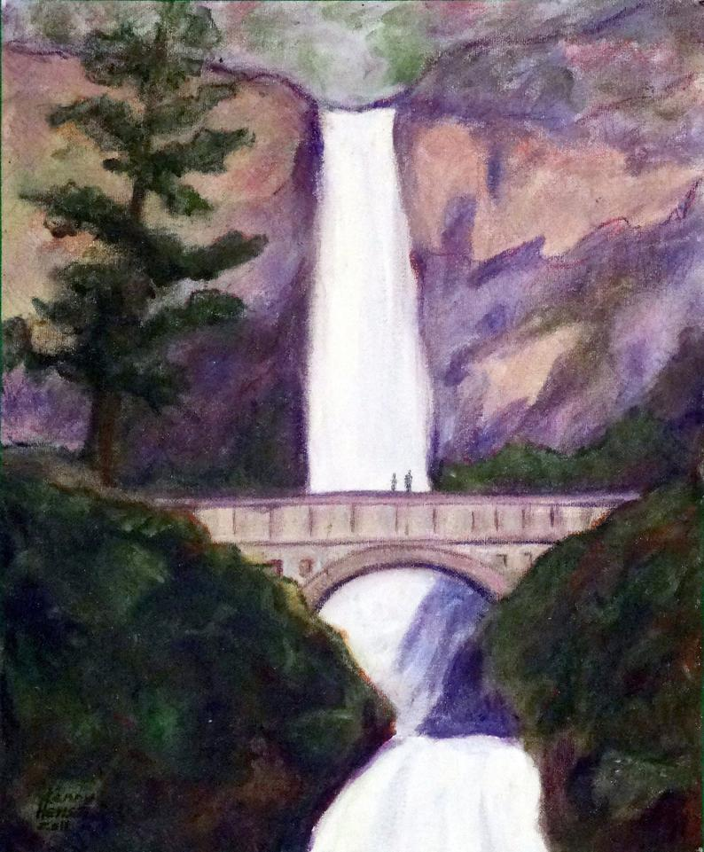

In this interpretation of the Multnomah Falls painting, I tried to create a copy via p5. This was my result. As you can see, it's spot on. I focused more on straight lines using vertexes, rather than curves, or curveVertexes. I wanted to try to copy this painting because I love Oregon, and I find waterfalls to be incredibly beautiful.
